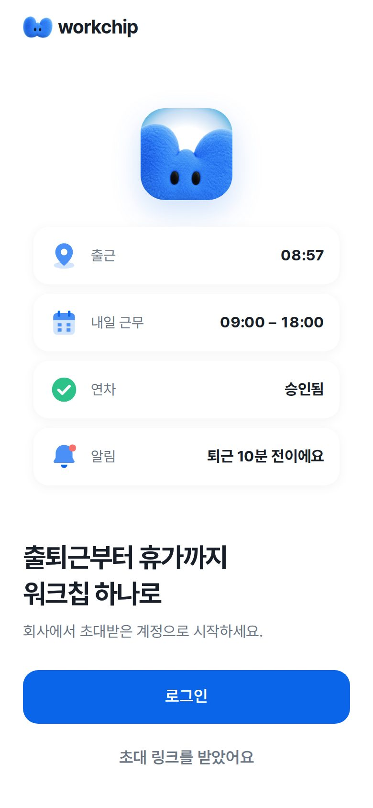

<!doctype html>
<html lang="ko">
<head>
<meta charset="UTF-8" />
<meta name="viewport" content="width=device-width, initial-scale=1.0" />
<meta name="robots" content="noindex" />
<title>워크칩 리디자인 변경점</title>
<link rel="stylesheet" href="https://cdn.jsdelivr.net/gh/orioncactus/pretendard@v1.3.9/dist/web/variable/pretendardvariable-dynamic-subset.min.css" />
<style>
  @page { size: A4 landscape; margin: 0; }
  * { box-sizing: border-box; }
  body { margin: 0; font-family: "Pretendard Variable", Pretendard, sans-serif; color: #333D4B; background: #E5E8EB; word-break: keep-all; letter-spacing: -0.01em; -webkit-print-color-adjust: exact; print-color-adjust: exact; }
  .page { width: 297mm; height: 210mm; padding: 14mm 16mm 12mm; background: #fff; margin: 0 auto 8mm; position: relative; overflow: hidden; page-break-after: always; display: flex; flex-direction: column; }
  @media print { body { background: #fff; } .page { margin: 0; } }
  .eyebrow { font-size: 10pt; font-weight: 600; color: #0A65E8; margin-bottom: 2mm; }
  h1 { margin: 0 0 2mm; font-size: 20pt; line-height: 1.3; color: #191F28; letter-spacing: -0.03em; }
  h1 + p.d { margin: 0 0 6mm; font-size: 10.5pt; color: #6B7684; }
  .foot { position: absolute; left: 16mm; right: 16mm; bottom: 6mm; display: flex; justify-content: space-between; font-size: 8pt; color: #B0B8C1; }
  .cmp { display: grid; gap: 6mm; flex: none; }
  .cmp.desk { grid-template-columns: 1fr 1fr; }
  .cmp.desk img { width: 100%; aspect-ratio: 1440/900; object-fit: cover; object-position: top; }
  .cmp figure { margin: 0; }
  .cmp figcaption { font-size: 9pt; font-weight: 700; color: #6B7684; margin-bottom: 1.5mm; display: flex; gap: 2mm; align-items: center; }
  .cmp figcaption.after { color: #0A65E8; }
  .cmp img { display: block; border-radius: 3mm; border: 0.3mm solid #E5E8EB; }
  .lay-m { display: grid; grid-template-columns: auto auto 1fr; gap: 6mm; flex: 1; min-height: 0; }
  .lay-m img { height: 150mm; width: auto; }
  .changes { margin: 0; padding: 0; list-style: none; counter-reset: c; font-size: 9.5pt; line-height: 1.5; }
  .changes li { counter-increment: c; position: relative; padding: 0 0 2.4mm 7mm; }
  .changes li::before { content: counter(c); position: absolute; left: 0; top: 0.4mm; width: 4.6mm; height: 4.6mm; border-radius: 50%; background: #0A65E8; color: #fff; font-size: 7.5pt; font-weight: 700; display: grid; place-items: center; }
  .changes b { color: #191F28; }
  .changes .w { color: #8B95A1; }
  .cols2 { columns: 2; column-gap: 10mm; margin-top: 5mm; }
  .cols2 li { break-inside: avoid; }
  table.tbl { width: 100%; border-collapse: collapse; font-size: 9.5pt; }
  .tbl th { text-align: left; font-size: 8.5pt; color: #8B95A1; font-weight: 600; padding: 2mm 3mm; background: #F9FAFB; }
  .tbl td { padding: 2.2mm 3mm; border-top: 0.3mm solid #F2F4F6; vertical-align: top; }
  .tbl td:first-child { font-weight: 600; color: #191F28; white-space: nowrap; }
  .tbl.ck td:nth-child(2) { white-space: nowrap; }
  .sw { display: inline-block; width: 4mm; height: 4mm; border-radius: 1mm; vertical-align: -0.8mm; margin-right: 1.5mm; border: 0.2mm solid rgba(0,0,0,.08); }
  .cover { justify-content: center; padding-left: 28mm; }
  .cover .logo { display: flex; align-items: center; gap: 3mm; font-size: 16pt; font-weight: 700; color: #191F28; margin-bottom: 18mm; }
  .cover .logo img { height: 9mm; }
  .cover h1 { font-size: 34pt; margin-bottom: 5mm; }
  .cover p { font-size: 13pt; color: #6B7684; margin: 0 0 2mm; }
  .cover .meta { margin-top: 16mm; display: grid; grid-template-columns: 34mm 1fr; row-gap: 2.5mm; font-size: 10.5pt; }
  .cover .meta span:nth-child(odd) { color: #8B95A1; }
  .cover .meta span:nth-child(even) { color: #191F28; font-weight: 600; }
  .note { margin-top: auto; padding: 3.5mm 5mm; border-radius: 3mm; background: #F2F4F6; font-size: 9pt; color: #4E5968; }
  .grid2 { display: grid; grid-template-columns: 1fr 1fr; gap: 10mm; }
  h2 { font-size: 12pt; margin: 0 0 3mm; color: #191F28; }
  .toc { columns: 2; column-gap: 12mm; font-size: 10.5pt; line-height: 2; margin: 0; padding: 0; list-style: none; }
  .toc span { color: #8B95A1; display: inline-block; width: 12mm; }
  .tag { display: inline-block; font-size: 8pt; font-weight: 700; padding: 0.4mm 2mm; border-radius: 1.2mm; background: #EAF2FE; color: #0A65E8; margin-right: 1mm; }
  .tag.p2 { background: #F2F4F6; color: #6B7684; }

  .v-grid { display: grid; gap: 5mm; align-items: start; }
  .v-grid figure { margin: 0; }
  .v-grid figcaption { font-size: 8.5pt; font-weight: 700; color: #6B7684; margin-bottom: 1.2mm; white-space: nowrap; overflow: hidden; text-overflow: ellipsis; }
  .v-grid figcaption.after { color: #0A65E8; }
  .v-grid img { display: block; width: 100%; border-radius: 2.5mm; border: 0.3mm solid #E5E8EB; }
  .v-grid img.desk { aspect-ratio: 1440/900; object-fit: cover; object-position: top; }
  .v-grid img.mob { aspect-ratio: 390/844; object-fit: cover; object-position: top; }
  .v-grid img.tab { aspect-ratio: 1; object-fit: cover; object-position: top; }
  .v-row { display: grid; grid-template-columns: 1fr 1fr; gap: 8mm; margin-top: 4mm; }
  .req-tbl td:first-child { width: 8mm; color: #0A65E8; font-weight: 800; }
  .req-tbl td:nth-child(2) { width: 62mm; white-space: normal; color: #333D4B; font-weight: 600; }
  .req-tbl td:last-child { width: 18mm; color: #8B95A1; white-space: nowrap; }
  .pro { display: grid; grid-template-columns: 1fr 1fr; gap: 4mm; font-size: 9pt; }
  .pro div { padding: 3.5mm 4mm; border-radius: 3mm; background: #EAF2FE; }
  .pro div.con { background: #F2F4F6; }
  .pro b { display: block; margin-bottom: 1mm; color: #191F28; font-size: 9.5pt; }
  .pro ul { margin: 0; padding-left: 4mm; line-height: 1.55; }
  .thumbs { display: grid; grid-template-columns: repeat(6, 1fr); gap: 4mm 4mm; }
  .thumbs figcaption { font-size: 8pt; }
  .thumbs small { display: block; font-size: 7.5pt; color: #8B95A1; margin-top: 0.8mm; line-height: 1.35; }
  .mthumbs { display: grid; grid-template-columns: repeat(6, 1fr); gap: 5mm; }
</style>
</head>
<body>
<div id="doc"></div>
<script>
const B = 'assets/review/before/', A = 'assets/review/after/';
const SITE = 'https://webpage-redesign-9ab275.netlify.app';
let pageNo = 0;
const foot = (t) => `<div class="foot"><span>워크칩 리디자인 변경점 · 2026.10.27 · ${t}</span><span>${++pageNo}</span></div>`;

// 화면별 비교 페이지 데이터: [코드, 제목, 설명, 종류(desk|mobile), 이미지 이름, before 존재 여부, 변경 목록]
const SCREENS = [
  ['A1', '관리자 · 로그인', 'admin.workchip.co.kr 첫 화면', 'desk', 'admin-login', true, [
    '<b>테두리 카드 제거</b> — 흰 카드+그림자 상자를 없애고 흰 바탕 위에 바로 배치. 상자 안의 상자를 줄여 시선이 입력창으로 바로 감',
    '<b>제목 추가</b> — 로고만 있던 자리에 "사업자 대시보드에 로그인해 주세요"(28px·굵게, 왼쪽 정렬)와 한 줄 설명. 무엇을 하는 화면인지 먼저 말함',
    '<b>로고 위치</b> — 가운데 큰 로고 → 왼쪽 위 머리줄(심볼+workchip). 오른쪽 위에는 "직원 앱으로 가기"',
    '<b>입력창</b> — 테두리형 → 회색 면(#F2F4F6) 56px, 초점 시 파란 테두리+옅은 링. 입력창 위에 라벨(이메일/비밀번호)',
    '<b>비밀번호 보기</b> — antd eye-invisible 선형 → 모노 eye / eye-off (직원 앱과 같은 그림)',
    '<b>보조 링크 정리</b> — "비밀번호 찾기"를 "이메일 기억하기" 오른쪽 같은 줄로, 버튼 아래에는 "아직 회사가 없나요? 회사 만들기" 한 줄만',
    '<b>언어 전환</b> — 오른쪽 위 → 아래 바닥줄 오른쪽(© Rootlabo 와 같은 줄). 자주 안 쓰는 기능을 시선 밖으로',
    '<b>로그인 버튼</b> — 두 칸이 다 채워지기 전까지 비활성(옅은 파랑), 높이 56px·모서리 16px',
  ]],
  ['A2', '관리자 · 공통 레이아웃 (사이드바 · 상단바)', '모든 관리자 화면에 공통', 'desk', 'admin-home', true, [
    '<b>라이트 모드 기본</b> — 처음 들어오면 항상 라이트. 화면 모드 전환은 프로필 메뉴 안으로 이동(사용자가 다크로 바꾸면 그 선택만 기억)',
    '<b>상단바 아이콘 5개 → 2개</b> — 언어·화면 모드를 프로필 메뉴로 모으고 "직원 앱 · 알림 · 프로필"만 남김. 검색은 왼쪽 맨 앞에 ⌘K 표시와 함께',
    '<b>상단바의 날짜·실시간 숫자 제거</b> — "10월 27일 · 근무 중 1명 · 오늘 출근 1 · 지각 0"은 홈 머리말과 KPI 카드로 옮겨 중복 제거',
    '<b>사이드바 로고</b> — 맨 아래 작은 로고 → 맨 위(심볼+workchip). 그 아래 회사 전환(SOLV · 소유자, 위아래 화살표)',
    '<b>메뉴 선택 표시</b> — 파란 글씨 → 회색 면 + 굵은 검정 글씨. 메뉴 아이콘은 컬러 nav-* (새 팔레트) 20px',
    '<b>빈 "즐겨찾기 +" 구역 제거</b> — 즐겨찾기가 하나도 없을 때는 숨김(시안 기준)',
    '<b>무료 체험 카드 축소</b> — 4줄+파란 테두리 → "무료 체험 D-71" + 진행 막대 + 한 줄 요약, 회색 면',
    '<b>바탕/면 대비</b> — 콘텐츠 바탕 #F2F4F6 위에 흰 카드(모서리 20px), 카드 테두리는 쓰지 않음',
  ]],
  ['A3', '관리자 · 홈 (오늘 운영)', '로그인 직후 첫 화면', 'desk', 'admin-home', true, [
    '<b>머리말 한 줄 정렬</b> — 제목 "오늘 운영" + "10월 27일 화요일 · 오후 5:53 기준", 오른쪽 끝에 근무지 선택 + 주 버튼 1개',
    '<b>KPI 4칸 같은 크기로</b> — 크기가 다른 출근율/지각률 카드 2개 → 오늘 출근 · 지금 근무 중 · 오늘 지각 · 오늘 휴가 4칸, 큰 숫자 + 보조 한 줄',
    '<b>처리할 일을 오른쪽 위로</b> — 맨 아래 있던 "처리할 일"을 오른쪽 열 맨 위로. 먼저 해야 할 일을 가장 먼저 보이게',
    '<b>차트 단순화</b> — 0~100% 축에서 납작하던 선 → 60~100% 축, 영역 옅게 채움, 점 표시는 마지막 값만',
    '<b>특이사항</b> — 원형 차트 + 빈 막대 8개 → 2열 숫자 목록. 0은 옅은 회색으로 눌러서 있는 값만 눈에 띄게',
    '<b>휴가</b> — 가로 3칸 카드 → 오른쪽 열 세로 목록(오늘/내일/모레)',
    '<b>그룹별 비교</b> — 이름 · 막대 · 값 3열 고정폭 정렬, 값 오른쪽 정렬',
  ]],
  ['A4', '관리자 · 출퇴근', '근태 > 출퇴근 현황', 'desk', 'admin-attendance', true, [
    '<b>제목과 탭 순서</b> — 탭(파란 채운 버튼)이 제목 위 → 제목 · 설명 아래에 밑줄형 탭(현황 · 승인 2 · 결재선 · 설정). 모든 관리자 화면 동일',
    '<b>탭 아이콘 제거</b> — 탭에 붙은 Xn 2톤 선형 아이콘을 빼고 글자만. 숫자는 탭 옆 회색으로(승인 2)',
    '<b>"도움말" 알약 → ? 아이콘</b> — 제목 바로 옆 작은 원형 아이콘',
    '<b>필터 한 줄</b> — 일별/월별 · 날짜 · 오늘을 왼쪽, 근무지 · 그룹 · 직무 · 이름 찾기를 오른쪽 끝에. 새로고침 버튼 제거',
    '<b>상태 칩 15개(2줄) → 6개(1줄)</b> — 전체 · 근무 중 · 출근 전 · 휴가·휴무 · 배정 없음 + "근태 이상"(지각·조퇴·퇴근 누락·반경 밖·다른 기기는 펼침 안으로)',
    '<b>선택한 칩</b> — 진한 회색 면 + 흰 글씨. 나머지는 흰 면',
    '<b>표</b> — 행 높이 64px 고정, 세로 구분선 없음, 머리줄 13px 회색, 빈 값은 "—"로 통일. 상태는 색 배지(근무 중=초록, 출근 전=회색, 휴가=파랑)',
    '<b>내보내기</b> — 오른쪽 위 보조 버튼으로 위치 통일',
  ]],
  ['A5', '관리자 · 스케줄', '근태 > 스케줄 근무표 · v2 수정', 'desk', 'admin-schedules', true, [
    '<b>글자 안 깨지게</b> — 칸 안 시간 · 이름은 한 줄 고정 + 넘치면 말줄임(…). 시간은 “10:00–22:00” 붙여 쓰기, 요일 열 최소 폭 확보',
    '<b>좁은 화면</b> — 표 전체를 옆으로 넘기고 구성원 열 · 머리줄 · 근무 인원 줄은 고정(sticky). 태블릿 · 휴대폰에서도 같은 표',
    '<b>근무 칸</b> — 시간대마다 고유 색(왼쪽 색 막대 + 옅은 면). 시간 굵게, 아래 줄 시간대 이름. 다음 날 퇴근은 +1 표시',
    '<b>빈 칸 · 휴무</b> — 빈 칸은 빗금 칸(+), 휴무는 옅은 글자만. 위쪽에 “빈 칸 N” 경고',
    '<b>근무 인원 줄</b> — 표 맨 아래 요일별 “N명 · 시간 합계” 고정',
    '<b>칸 선택 → 아래 막대</b> — 누르거나 끌어서 고르면 시간대 넣기 · 휴무 · 메모 · 바꾸기 · 비우기 (V3)',
    '<b>빠른 채우기</b> — 자동 배정 · 지난주 복사 · 주 패턴 반복 · 모두 지우기 4가지 화면 (V4)',
    '<b>주간 / 월간</b> — 월간은 날마다 근무 인원 · 시간대 색 점 · 빈 칸 수. 날짜를 누르면 그 주 근무표로',
  ]],
  ['A6', '관리자 · 휴가', '근태 > 휴가 신청', 'desk', 'admin-leave', true, [
    '<b>상태 칩에 컬러 아이콘</b> — 대기 · 승인 · 반려 · 취소 · 내 차례 칩 앞에 ap-pending / ap-approved / ap-rejected / ap-cancelled / ap-waiting',
    '<b>빈 표 머리줄 제거</b> — 데이터가 없을 때는 열 이름 대신 빈 상태만 크게(컬러 nav-leave 아이콘 + 제목 + 설명)',
    '<b>버튼 문구</b> — "휴가 등록하기" → "+ 휴가 등록". 동사 반복을 줄이고 모든 등록 버튼을 "+ ○○ 등록/추가/만들기"로 통일',
    '<b>탭</b> — 신청 · 캘린더 · 연차 현황 · 유형 · 결재선, 밑줄형 · 아이콘 없음',
  ]],
  ['A7', '관리자 · 구성원', '조직 > 구성원', 'desk', 'admin-members', true, [
    '<b>탭</b> — 구성원 62 · 초대 현황 3 · 출퇴근 기기 · 기기 변경 기록 (숫자 함께)',
    '<b>재직/비활성/전체</b> — 검정 알약 버튼 → 세그먼트(회색 바탕 안에 흰 선택)',
    '<b>필터</b> — 아이콘 + "전체 ○○" 넓은 드롭다운 6개 → "근무지 · 그룹 · 역할 · 고용 형태" 짧은 칩 + 검색, 오른쪽 정렬',
    '<b>역할 표시</b> — 색 점 + 글자 → 옅은 색 배지(소유자=주황, 관리자=파랑, 그 외=회색)',
    '<b>상태</b> — 맨 오른쪽 열 오른쪽 정렬, 초록 "재직" 배지',
    '<b>표 아래</b> — "62명 중 12명 · 더 보기" 바닥줄 추가',
  ]],
  ['A8', '관리자 · 근무지', '근무 기준 > 근무지', 'desk', 'admin-workplaces', true, [
    '<b>인증 방식 칩에 컬러 아이콘</b> — GPS(gps) · QR 코드(qr) · QR 코드 + GPS(auth-qr-gps) · 인증 없음(auth-none)',
    '<b>목록 앞 아이콘</b> — 옅은 파란 상자 안 선형 핀 → 컬러 nav-workplaces 36px',
    '<b>인증 표시</b> — 파란 테두리 배지 → 컬러 아이콘 + 글자 + 회색 반경(· 50m)',
    '<b>QR 보기</b> — 테두리 버튼 → 회색 면 작은 버튼 + 모노 qr-code, 오른쪽 끝 정렬. 행 끝 화살표(›) 제거',
    '<b>"QR 코드+GPS" 표기</b> — 띄어쓰기 통일 "QR 코드 + GPS"',
  ]],
  ['A9', '관리자 · 근무 정책', '근무 기준 > 근무 정책', 'desk', 'admin-policies', true, [
    '<b>유형 카드 3장</b> — 같은 높이·같은 구조(컬러 아이콘 → 이름 → 설명 2줄 → 사용 중 배지)로 정렬',
    '<b>안내 문구</b> — 카드 아래 별도 안내 문장은 각 카드 설명으로 흡수',
    '<b>표</b> — 수정 · 삭제 글자 버튼 2개 → 행 끝 "⋯" 하나(메뉴 안에 수정/삭제). 유형 열 추가',
    '<b>활성/비활성</b> — 밑줄형 탭(활성 3 · 비활성)',
  ]],
  ['B1', '직원 앱 · 첫 화면 (처음 방문)', 'app.workchip.co.kr · v2 수정', 'mobile', 'app-intro', true, [
    '<b>캐릭터로 바꿈</b> — 앱 아이콘(배경 있는 네모) → 배경 없는 캐릭터(workchip-v2-mark). 앱 아이콘은 홈 화면 추가 안내에만 써요',
    '<b>떠 있는 카드 4장 유지</b> — 캐릭터 둘레에 좌우 번갈아 정렬, 천천히 위아래로 떠요(속도 · 시작 시점만 다르게)',
    '<b>카드 아이콘 통일</b> — 남색 타일 핀 / 갈색 달력 / 하늘 체크 / 선형 종 → 컬러 gps · nav-schedules · ap-approved · noti-bell',
    '<b>"Workchip 하나로" → "워크칩 하나로"</b>, 왼쪽 위 로고(심볼 + workchip)',
    '<b>처음 방문일 때만</b> — 한 번 로그인한 뒤에는 이 화면을 건너뛰고 바로 시계 로그인(B2)이 열려요',
    '<b>초대 링크를 받았어요</b> — 아래 시트: 링크 · 코드 붙여 넣기 → 가입',
  ]],
  ['B2', '직원 앱 · 로그인 (시계)', '처음 화면 > 로그인 · 다시 열 때 첫 화면 · v2 수정', 'mobile', 'app-login', true, [
    '<b>기존 디자인 살림</b> — 남색 위쪽 + 큰 시계 + 흰 시트 구조 그대로. 정렬 · 여백 · 글자 크기만 정리',
    '<b>시계가 지금 시각으로 흘러요</b> — 1초마다 갱신, 분이 바뀌면 숫자가 아래에서 위로 굴러 올라옴. 콜론은 천천히 깜빡',
    '<b>돌아가는 다이얼</b> — 오른쪽 위 원 장식이 초침 다이얼로: 점 하나가 1분에 한 바퀴',
    '<b>날짜 + 한 줄 멘트</b> — 시간대(새벽 · 아침 · 오전 · 점심 · 오후 · 저녁 · 밤)마다 다른 문장, 8초마다 같은 시간대 안에서 바뀜',
    '<b>다시 열 때</b> — 지난 계정을 기억해 "다시 만나서 반가워요" + 계정 칩, 비밀번호만 입력. "다른 계정"으로 바꾸기',
    '<b>입력창</b> — 라벨이 안에 있는 기존 방식 유지, 누르면 파란 테두리. 빈 칸으로 누르면 안내 문구',
    '<b>도움말</b> — "계정이 없거나 로그인이 안 되나요?" → 아래 시트(초대 요청 · 비밀번호 초기화 · 회사 만들기)',
  ]],
  ['B3', '직원 앱 · 홈', '로그인 직후', 'mobile', 'app-home', true, [
    '<b>헤더 알림</b> — antd BellOutlined 선형 → 모노 bell',
    '<b>출근 버튼</b> — 선형 login 아이콘 + "출근" → 모노 log-in + "출근하기". 시각 앞에 오전/오후',
    '<b>근무지 줄</b> — 옅은 상자 + 선형 핀 → 컬러 gps 아이콘, 이름과 인증 방식 2줄',
    '<b>오늘 기록</b> — 기록 없을 때 "출근 전/퇴근 전"을 옅은 회색으로',
    '<b>"다가오는 일정" 카드 추가</b> — 홈 아래 빈 공간에 다음 휴가·근무 2건(시안 제안)',
    '<b>하단 탭바</b> — 떠 있는 알약형 → 화면 폭 전체 고정 탭바. 휴가 아이콘 해(sun) → 우산(umbrella), 선택 탭은 검정',
  ]],
  ['B4', '직원 앱 · 스케줄', '탭바 > 스케줄', 'mobile', 'app-schedule', true, [
    '<b>머리말</b> — "스케줄" 제목 오른쪽에 나/팀 세그먼트',
    '<b>달력 카드</b> — 월 이동 화살표를 달 이름 양옆으로, 오늘은 파란 원, 일요일 빨강',
    '<b>표시 점 2가지로</b> — 배정 · 근무 정책 · 휴가 · 승인 대기 · 변경 알림 5가지 범례 → 근무(파랑) · 휴가(주황) 2가지',
    '<b>선택한 날</b> — 아래 카드에 컬러 아이콘 + 일정 + 상태 배지',
  ]],
  ['B5', '직원 앱 · 근태', '탭바 > 근태', 'mobile', 'app-attendance', true, [
    '<b>요약 4칸</b> — 근무일 · 근무 · 지각 · 결근을 한 카드 안 4칸으로',
    '<b>기록 목록</b> — 날짜(큰 숫자+요일) · 시간과 근무시간 · 상태 배지 3열. "근무 정책 없음" 반복 문구 제거',
    '<b>휴무일</b> — 옅은 회색으로 눌러서 일한 날이 먼저 보이게',
    '<b>기록 수정 요청</b> — 목록 아래 컬러 time-edit 행으로 진입점 추가(시안)',
  ]],
  ['B6', '직원 앱 · 휴가', '탭바 > 휴가', 'mobile', 'app-leave', true, [
    '<b>큰 숫자 하나</b> — "신청할 수 있는 연차 15일"만 크게, 부여 · 사용 · 승인 대기는 아래 한 줄. 같은 값이던 "잔여 15일" 중복 제거',
    '<b>휴가 신청 버튼</b> — 같은 카드 안 아래, 화면의 주 버튼 1개',
    '<b>다가오는 휴가</b> — 날짜 상자 → 컬러 nav-leave 아이콘 + 기간 + 승인 배지',
  ]],
  ['B7', '직원 앱 · 전체', '탭바 > 전체', 'mobile', 'app-more', true, [
    '<b>메뉴 타일 7종 컬러로 통일</b> — noti-bell · gps · device-check · add-home · login-info · biz-dashboard · logout',
    '<b>알림 차단 안내</b> — 일반 카드 → 주황 안내 띠 + 컬러 alert, 메뉴 위로',
    '<b>메뉴 찾기</b> — 큰 검색창 → 머리말 오른쪽 검색 아이콘',
    '<b>묶음 제목 제거</b> — "바로가기 · 설정" 라벨 대신 카드 묶음으로만 구분. "홈 화면에 추가" 메뉴 추가',
    '<b>로그아웃</b> — 설정 묶음 맨 아래 컬러 logout',
  ]],
];


const fig = (src, cap, cls = 'desk', after = true, note = '') => `<figure><figcaption class="${after ? 'after' : ''}">${cap}</figcaption>${note ? `<small>${note}</small>` : ''}</figure>`;
function v2() {
  const P = [];
  P.push(`<section class="page">
    <div class="eyebrow">V1 · v2 피드백 반영</div><h1>요청 8가지를 이렇게 바꿨어요</h1><p class="d">1차 시안에 받은 피드백 순서대로 정리했습니다. 오른쪽 번호의 페이지에 화면과 상세 변경점이 있습니다.</p>
    <table class="tbl req-tbl">
      <tr><th>#</th><th>요청</th><th>반영</th><th>페이지</th></tr>
      <tr><td>1</td><td>스케줄 근무표 글자가 깨짐 · 모바일이든 어떤 화면이든</td><td>칸 안 글자 한 줄 고정 + 말줄임, 요일 열 최소 폭, 구성원 열 · 머리줄 · 근무 인원 줄 고정. 데스크톱 · 태블릿(900px) · 휴대폰(390px)에서 확인</td><td>V2 · A5</td></tr>
      <tr><td>2</td><td>빠른 채우기 · 버튼 누르면 나오는 화면 전부</td><td>메뉴 4가지(자동 배정 · 지난주 복사 · 주 패턴 반복 · 모두 지우기) 각각 시트/확인 창, 결과 미리보기 · 되돌리기. 칸 선택 막대(시간대 넣기 · 휴무 · 메모 · 바꾸기 · 비우기)</td><td>V3 · V4</td></tr>
      <tr><td>3</td><td>근무 시간대 화면이 만들다 만 느낌</td><td>근무지별 묶음 목록 + 24시간 막대 + 사용 칸 수, 만들기 · 수정 · 삭제 시트(시간 · 출근+N시간 · 미리보기 · 휴게 · 근무지 · 색)</td><td>V5</td></tr>
      <tr><td>4</td><td>디자이너 Figma 참고</td><td><b>링크를 열지 못했어요.</b> claude.ai 공유 링크가 보안 확인(Cloudflare)으로 막혀 화면을 볼 수 없었습니다. Figma 프레임을 PNG/PDF로 내보내 첨부해 주시면 맞춰 다시 반영할게요. 이번에는 보내 주신 실제 앱 캡처를 기준으로 했어요</td><td>—</td></tr>
      <tr><td>5</td><td>첫 화면은 앱 아이콘 말고 캐릭터</td><td>배경 없는 캐릭터(workchip-v2-mark)로 교체. 앱 아이콘은 홈 화면 추가 안내에만</td><td>V6 · B1</td></tr>
      <tr><td>6</td><td>한 번 로그인하면 다음엔 시계 로그인 화면</td><td>로그인한 계정을 기억해 다음에 열면 처음 화면을 건너뛰고 시계 로그인으로, "다시 만나서 반가워요" + 비밀번호만 입력</td><td>V7 · B2</td></tr>
      <tr><td>7</td><td>회사 만들기 등 "시안" 토스트만 있던 곳</td><td>회사 만들기(2단계 + 완료) · 비밀번호 찾기 · 메뉴 찾기(⌘K) · 알림 · 회사 바꾸기 · 도움말 · 내보내기(CSV) · 각종 등록/수정 시트 · 직원 앱 출퇴근 · 기록 수정 · 휴가 신청 등 30곳 이상을 실제 화면으로</td><td>V8 · V9</td></tr>
      <tr><td>8</td><td>앱 로그인: 지금 시각으로 도는 시계 + 날짜 + 멘트, 기존 디자인 살리기 · 장점?</td><td>남색 시계 + 흰 시트 기존 구조 유지, 1초 갱신 · 숫자 굴림 · 초침 다이얼 · 시간대별 멘트. 장점과 주의점은 V7에 정리</td><td>V7 · B2</td></tr>
    </table>
    ${foot('v2 피드백 반영')}</section>`);
  P.push(`<section class="page">
    <div class="eyebrow">V2 · 요청 1</div><h1>근무표 글자가 깨지지 않게 · 어떤 화면 폭에서도</h1>
    <div class="v-grid" style="grid-template-columns:1fr 1fr">${fig(B + 'admin-schedules.jpg', '지금 배포본', 'desk', false)}${fig(A + 'admin-schedules.jpg', '변경 · 데스크톱 1440px')}</div>
    <div class="v-row"><div class="v-grid" style="grid-template-columns:1.25fr .55fr .55fr">${fig(A + 'v2-tablet.jpg', '태블릿 900px', 'tab')}${fig(A + 'v2-mobile.jpg', '휴대폰 390px', 'mob')}${fig(A + 'v2-mobile-sel.jpg', '휴대폰 · 칸 선택', 'mob')}</div>
      <ol class="changes"><li><b>한 줄 고정 + 말줄임</b> — 칸 안 시간 · 이름은 줄바꿈하지 않고, 넘치면 "…". 마우스를 올리면 전체 내용(시간 · 휴게 · 실제 근무 · 메모)이 툴팁으로</li>
        <li><b>최소 폭</b> — 요일 열 약 128px, 표 최소 1060px. 좁으면 표만 옆으로 넘겨요</li>
        <li><b>고정되는 곳</b> — 구성원 열(왼쪽), 요일 머리줄(위), 근무 인원 줄(아래)</li>
        <li><b>휴대폰</b> — 사진은 숨기고 이름 · 그룹만, 안내 문구 숨김, 선택 막대는 화면 폭 전체</li>
        <li><b>숫자 정렬</b> — 시간은 고정폭 숫자(tabular-nums)라 칸마다 위치가 같아요</li></ol></div>
    ${foot('근무표 글자 · 반응형')}</section>`);
  P.push(`<section class="page">
    <div class="eyebrow">V3 · 요청 2</div><h1>칸을 고르면 아래 막대가 나와요</h1><p class="d">기존 배포본의 위쪽 도구줄(선택한 칸 · 근무지 시간대 · 휴무 · 근무 장소 · 메모 · 바꾸기 · 원래대로)을 선택했을 때만 아래에 뜨는 막대로 옮겼습니다.</p>
    <div class="v-grid" style="grid-template-columns:1fr 1fr">${fig(A + 'v2-select.jpg', '끌어서 여러 칸 선택 → 아래 막대')}${fig(A + 'v2-pick.jpg', '시간대 넣기 → 근무지별 시간대 목록')}</div>
    <ol class="changes cols2"><li><b>고르는 법</b> — 누르기 · 끌기(사각형) · Shift+클릭(범위) · ⌘/Ctrl+클릭(더하기) · 두 번 누르기(바로 시간대 고르기). 휴대폰은 누를 때마다 더하기/빼기</li>
      <li><b>막대</b> — N칸 선택 · (1칸이면 누구 · 언제) · 시간대 넣기 · 휴무 · 메모 · 바꾸기(2칸일 때) · 비우기 · 선택 해제</li>
      <li><b>시간대 넣기</b> — 공용 / 근무지별로 묶고 색 점 · 시간 · 실제 근무 표시. 맨 아래 "새 시간대 만들고 넣기"</li>
      <li><b>메모</b> — 칸 오른쪽 위 주황 점, 직원 앱 스케줄에도 보여요</li>
      <li><b>휴가 칸 보호</b> — 휴가 칸은 바꾸지 않고 "휴가 N칸은 그대로 뒀어요"</li>
      <li><b>되돌리기</b> — 모든 변경 뒤 토스트의 "되돌리기"로 바로 취소</li></ol>
    ${foot('칸 선택')}</section>`);
  P.push(`<section class="page">
    <div class="eyebrow">V4 · 요청 2</div><h1>빠른 채우기 4가지 화면</h1>
    <div class="v-grid" style="grid-template-columns:repeat(3,1fr)">
      ${fig(A + 'v2-qf.jpg', '① 빠른 채우기 메뉴')}${fig(A + 'v2-auto.jpg', '② 자동 배정 시트')}${fig(A + 'v2-autodone.jpg', '② 자동 배정 결과 (빈 칸만 채움)')}
      ${fig(A + 'v2-copy.jpg', '③ 지난주 그대로 복사')}${fig(A + 'v2-repeat.jpg', '④ 주 패턴 반복')}${fig(A + 'v2-clear.jpg', '⑤ 이번 주 배정 모두 지우기')}</div>
    <ol class="changes cols2" style="margin-top:4mm"><li><b>자동 배정</b> — 근무지 → 넣을 시간대 → 요일별 필요 인원 → 주 최소 휴무 · 하루 최대 인원 → 대상 구성원. 아래 요약에 "채울 칸 N칸 · 총 시간"이 바로 계산되고 버튼 문구도 "N칸 채우기"로</li>
      <li><b>지난주 복사</b> — 지난주 → 이번 주 카드로 무엇이 어디로 가는지, "이미 채운 칸은 그대로 / 덮어쓰기"</li>
      <li><b>주 패턴 반복</b> — 요일별 인원 미리보기, 반복할 주 1–12, 끝나는 날짜 표시, 공휴일 비우기. 끝나면 "다음 주 보기"</li>
      <li><b>모두 지우기</b> — 빨간 확인 창에 지울 칸 수 · 범위(스케줄 근무제만, 휴가 제외). 되돌리기 가능</li></ol>
    ${foot('빠른 채우기')}</section>`);
  P.push(`<section class="page">
    <div class="eyebrow">V5 · 요청 3</div><h1>근무 시간대 · 만들기 · 수정</h1>
    <div class="v-grid" style="grid-template-columns:1fr 1fr 1fr">${fig(B + 'admin-shifts.jpg', '지금 배포본', 'desk', false)}${fig(A + 'v2-shifts.jpg', '변경 · 근무지별 목록')}${fig(A + 'v2-shiftnew.jpg', '새 근무 시간대 시트')}</div>
    <div class="v-row"><div class="v-grid" style="grid-template-columns:1fr 1fr">${fig(A + 'v2-shiftedit.jpg', '수정 · 다음 날 퇴근 시간대')}${fig(A + 'v2-month.jpg', '근무표 월간 보기')}</div>
      <ol class="changes"><li><b>목록</b> — 공용 · 근무지별로 묶고, 한 줄에 색 · 이름 | 0–24시 막대(밤샘은 두 조각) | 시간 · 실제 근무 · 휴게 | 근무표에서 쓰는 칸 수</li>
        <li><b>만들기</b> — 이름 → 출근 · 퇴근 → "출근 + 8~12시간" 빠른 칩 → 24시간 막대 미리보기 → "총 9시간 − 휴게 1시간 = 실제 근무 8시간"</li>
        <li><b>휴게 · 근무지 · 색</b> — 휴게 5단계, 근무지 전용 여부, 12색. 휴게가 근무보다 길면 저장 막힘</li>
        <li><b>수정 · 삭제</b> — 몇 칸에 쓰이는지 알려 주고, 지우면 그 칸이 비는 걸 확인 창에서 미리 알려요</li>
        <li><b>탭</b> — "근무 시간대 8" 처럼 개수 함께, 근무표 탭과 같은 머리말 구조</li></ol></div>
    ${foot('근무 시간대')}</section>`);
  P.push(`<section class="page">
    <div class="eyebrow">V6 · 요청 5</div><h1>첫 화면은 캐릭터로</h1>
    <div class="lay-m" style="grid-template-columns:auto auto auto 1fr"><div class="cmp"><figure><figcaption>지금 배포본</figcaption></figure></div>
      <div class="cmp"><figure><figcaption>1차 시안 (앱 아이콘 · 교체됨)</figcaption></figure></div>
      <div class="cmp"><figure><figcaption class="after">v2 · 캐릭터</figcaption></figure></div>
      <ol class="changes"><li><b>캐릭터</b> — 배경 있는 앱 아이콘 → 배경 없는 캐릭터 이미지. 그림자만 살짝, 천천히 위아래로</li>
        <li><b>앱 아이콘 쓰는 곳</b> — 홈 화면에 추가 안내 · 파비콘 · 공유 이미지에만</li>
        <li><b>카드 4장</b> — 지금 배포본처럼 캐릭터 둘레에 떠 있되 기울기는 없애고 좌우 번갈아 정렬, 아이콘은 컬러 세트로 통일</li>
        <li><b>바탕</b> — 위는 옅은 하늘색, 아래로 흰색. 버튼 2개는 화면 아래</li>
        <li><b>언제 보이나</b> — 처음 방문했을 때만. 로그인한 적이 있으면 V7 시계 로그인으로 바로</li></ol></div>
    ${foot('첫 화면 캐릭터')}</section>`);
  P.push(`<section class="page">
    <div class="eyebrow">V7 · 요청 6 · 8</div><h1>시계 로그인 · 다시 열면 바로 이 화면</h1>
    <div class="lay-m" style="grid-template-columns:auto auto auto 1fr;gap:5mm"><div class="cmp"><figure><figcaption>지금 배포본</figcaption></figure></div>
      <div class="cmp"><figure><figcaption class="after">v2 · 처음 로그인</figcaption></figure></div>
      <div class="cmp"><figure><figcaption class="after">v2 · 다시 열 때</figcaption></figure></div>
      <div><ol class="changes"><li><b>기존 구조 유지</b> — 남색 시계 영역 + 둥근 흰 시트. 로고 · 날짜 · 시계 · 멘트를 왼쪽 한 줄에 정렬</li>
        <li><b>살아 있는 시계</b> — 1초마다 갱신, 분이 바뀌면 숫자가 굴러 올라오고, 초침 다이얼이 1분에 한 바퀴</li>
        <li><b>멘트</b> — 시간대 7구간 × 문장 2개, 8초마다 부드럽게 바뀜</li>
        <li><b>다시 열 때</b> — 기억한 계정 칩 + 비밀번호만. "다른 계정"으로 지우기</li></ol>
      <div class="pro" style="margin-top:3mm;grid-template-columns:1fr;gap:3mm"><div><b>장점</b><ul><li>열자마자 지금 시각 → "출근 찍으러 왔다"는 목적에 바로 맞음</li><li>시간대 멘트가 출퇴근 기록을 떠올리게 해 퇴근 누락을 줄임</li><li>매일 쓰는 사람은 처음 화면을 건너뛰어 한 단계 빨라짐</li></ul></div>
        <div class="con"><b>주의할 점</b><ul><li>화면 시계는 휴대폰 시각 → 실제 기록은 서버 시각으로</li><li>공용 기기(매장 태블릿)에선 계정 기억을 끌 수 있게</li><li>키보드가 올라오면 시계 영역을 줄여 입력창이 안 가리게</li></ul></div></div></div></div>
    ${foot('시계 로그인')}</section>`);
  const AF = [['f-signup1', '회사 만들기 ①', '입력 즉시 검사 · 약관 동의'], ['f-signup2', '회사 만들기 ②', '업종 · 규모 · 근무 방식 (제안)'], ['f-signup3', '회사 만들기 완료', '캐릭터 · 다음 할 일'], ['f-forgot', '비밀번호 찾기', '메일 보낸 뒤 화면'], ['f-cmd', '메뉴 찾기 ⌘K', '메뉴 + 바로 하기 · 키보드 이동'], ['f-notif', '알림', '누르면 해당 탭으로'],
    ['f-company', '회사 바꾸기', '내 회사 목록 · 새 회사'], ['f-help', '도움말', '화면마다 다른 안내'], ['f-export', '내보내기', '실제 CSV 파일 내려받기'], ['f-approve', '출퇴근 승인', '요청 유형 아이콘 · 승인/반려'], ['f-attrow', '출퇴근 한 사람', '기록 · 알림 보내기 · 고치기'], ['f-leavecal', '휴가 캘린더', '월 달력 · 승인/대기 색'],
    ['f-member', '구성원 추가', '문자 · 링크 · 직접'], ['f-workplace', '근무지 등록', '지도 · 인증 · 반경'], ['f-qr', 'QR 보기', '이미지 · 인쇄'], ['f-policy', '근무 정책 만들기', '유형별 입력 · 주 52시간 검사'], ['f-group', '그룹 만들기', '상위 그룹 · 리더 · 승인 권한'], ['f-leave', '휴가 등록', '유형 · 기간 · 남는 연차']];
  P.push(`<section class="page">
    <div class="eyebrow">V8 · 요청 7</div><h1>"시안" 토스트만 있던 버튼 → 실제 화면 (사업자 대시보드)</h1><p class="d">1차 시안에서 누르면 "시안: ○○" 알림만 뜨던 곳을 모두 만들었습니다. 탭(승인 · 결재선 · 설정 · 캘린더 · 연차 현황 · 유형 · 초대 현황 · 출퇴근 기기 · 기기 변경 기록 · 비활성)과 필터 · 검색도 실제로 걸러져요.</p>
    <div class="thumbs v-grid">${AF.map(([f, c, n]) => fig(A + f + '.jpg', c, 'desk', true, n)).join('')}</div>
    ${foot('대시보드 흐름')}</section>`);
  const PF = [['f-app-punch', '출근하기', '위치 확인 → 기록 · QR로 찍기'], ['f-app-fix', '기록 수정 요청', '유형 6가지 · 날짜 · 시각 · 사유'], ['f-app-leave', '휴가 신청', '달력에서 기간 · 남는 연차'], ['f-app-device', '내 기기', '바꾸기 · 두고 옴 · 배터리'], ['f-app-help', '로그인 안내', '초대 요청 · 초기화 · 회사 만들기'], ['f-app-invite', '초대 링크', '코드 입력 → 가입']];
  P.push(`<section class="page">
    <div class="eyebrow">V9 · 요청 7</div><h1>직원 앱에서 열리는 화면</h1><p class="d">모든 시트는 화면 아래에서 올라오는 형태(손잡이 · 닫기 · 아래 고정 버튼)로 통일했습니다. 이 밖에 회사 바꾸기 · 내 근무지 · 홈 화면에 추가 · 로그인 정보 · 메뉴 찾기 · 개인정보처리방침 · 월/연도 고르기 · 팀 스케줄도 동작해요.</p>
    <div class="mthumbs v-grid">${PF.map(([f, c, n]) => fig(A + f + '.jpg', c, 'mob', true, n)).join('')}</div>
    ${foot('직원 앱 흐름')}</section>`);
  return P.join('');
}


const F = 'assets/review/figma/';
function v3() {
  const P = [];
  P.push(`<section class="page">
    <div class="eyebrow">W1 · v3 피드백 반영</div><h1>이번에 바꾼 4가지</h1><p class="d">디자이너 Figma(HTML 내보내기 4화면)와 운영 중인 대시보드의 실제 옵션을 기준으로 다시 맞췄습니다.</p>
    <table class="tbl req-tbl">
      <tr><th>#</th><th>요청</th><th>반영</th><th>페이지</th></tr>
      <tr><td>1</td><td>메뉴 찾기는 AI 찾기 · 지금 디자인 참고 ("이렇게 물어보세요")</td><td>"무엇을 하고 싶으세요?" 입력 + 찾기 버튼, 처음엔 <b>이렇게 물어보세요</b> 예시 질문, 물으면 답 카드(메뉴 이름 · 하는 일 · <b>이동 ›</b>), 아래 "메뉴 이동만 도와줘요 · 기록이나 설정은 바꾸지 않아요". 관리자(⌘K)와 직원 앱 둘 다</td><td>W2</td></tr>
      <tr><td>2</td><td>빠른 채우기 옵션이 빠짐 · 이미 넣은 배정 · 공통 규칙 · 구성원 규칙으로 구분, 옵션은 빼지 말 것</td><td>자동 배정을 운영 화면과 같은 <b>4구역</b>으로: ① 기간과 방식(기간 최대 31일 · 이미 넣은 배정: 남기고 빈 칸만 / 전부 다시 짜기) ② 요일별 필요 인원(시간대 × 요일) ③ 공통 규칙(주 휴무일 · 주 최대 근무 · 최소 휴식 · 최대 연속 근무) ④ 구성원 조건(포함 · 주 휴무일 · 희망 휴무 요일 · 안 되는 날 · 안 되는 근무 시간대). 운영 옵션을 하나도 빼지 않았고 초안 미리보기만 더했어요</td><td>W3 · W4</td></tr>
      <tr><td>2</td><td>(같이 점검) 근무표에서 1차 때 줄였던 옵션</td><td>되살림: <b>보기</b>(칸에 보일 항목 6가지), <b>내보내기</b>(이미지 PNG · 엑셀 2시트), 선택 막대의 <b>근무 장소</b> · <b>원래대로</b>, 표 아래 <b>범례</b>(배정한 근무 · 근무 정책 일정 · 그날만 변경 · 휴무 · 배정 없음 · 휴가 · 휴가 대기)</td><td>W5</td></tr>
      <tr><td>3</td><td>첨부한 Figma 디자인 참고 · 캐릭터를 살리는 방향</td><td>직원 앱 홈 · 스케줄 · 근태 · 휴가를 Figma 값(색 · 크기 · 모서리 · 간격)대로. 캐릭터 4가지를 상황에 맞게: 기본(출근 전) · 사원증(근무 중) · 안대(퇴근 · 휴가) · 안경(확인 필요). 말풍선 · 반짝이 · 떠오르는 움직임 포함</td><td>W6 · W7</td></tr>
    </table>
    <div class="note">운영 대시보드는 화면만 열어 봤고, 저장 · 적용 버튼은 누르지 않았어요. 캡처의 구성원 이름은 가렸어요.</div>
    ${foot('v3 피드백 반영')}</section>`);
  P.push(`<section class="page">
    <div class="eyebrow">W2 · 요청 1</div><h1>메뉴 찾기 → AI 찾기 ("이렇게 물어보세요")</h1>
    <div class="v-grid" style="grid-template-columns:.9fr 1fr 1fr .42fr">${fig(B + 'live-ai.jpg', '지금 배포본 (참고)', 'nat', false)}${fig(A + 'v3-ai1.jpg', '변경 · 처음 열 때')}${fig(A + 'v3-ai2.jpg', '변경 · 물어본 뒤 답')}${fig(A + 'v3-app-ai.jpg', '직원 앱', 'mob')}</div>
    <ol class="changes cols2" style="margin-top:5mm"><li><b>입력</b> — "무엇을 하고 싶으세요?" + 오른쪽 <b>찾기</b> 버튼(글자를 넣어야 켜져요). 상단바 입력칸에도 같은 문구, ⌘K로 열기</li>
      <li><b>이렇게 물어보세요</b> — 예시 질문 4개(남은 연차 · 직원 초대 · 출근 시간 수정 · 근무표 자동으로). 누르면 바로 물어봐요</li>
      <li><b>답 카드</b> — 컬러 아이콘 + 메뉴 이름 + 무엇을 하는 곳인지 한 줄 + <b>이동 ›</b>. 가장 맞는 3개까지, ↑↓로 고르고 Enter로 이동</li>
      <li><b>바로 그 자리로</b> — 탭까지 맞춰 열어요(예: 연차 현황 탭, 승인 탭, 초대 시트, 자동 배정 메뉴)</li>
      <li><b>못 찾으면</b> — "딱 맞는 메뉴를 못 찾았어요" + 다시 물어볼 예시</li>
      <li><b>안내 문구</b> — 아래에 "메뉴 이동만 도와줘요 · 기록이나 설정은 바꾸지 않아요" (운영과 같은 원칙)</li></ol>
    <div class="note">시안에서는 질문을 키워드로 맞춰 메뉴를 고릅니다. 실제 서비스의 AI 응답과 연결된 것은 아니에요.</div>
    ${foot('AI 찾기')}</section>`);
  P.push(`<section class="page">
    <div class="eyebrow">W3 · 요청 2</div><h1>자동 배정 — 운영 옵션 그대로, 4구역으로</h1>
    <div class="v-grid" style="grid-template-columns:1fr 1fr 1fr">${fig(B + 'live-auto.jpg', '지금 배포본 (기준)', 'nat', false)}${fig(A + 'v3-auto1.jpg', '변경 · ① 기간과 방식 · ② 요일별 필요 인원')}${fig(A + 'v3-auto2.jpg', '변경 · ③ 공통 규칙 · ④ 구성원 조건')}</div>
    <table class="tbl" style="margin-top:4mm;font-size:8.8pt"><tr><th>구역</th><th>옵션 (운영과 같음)</th><th>시안에서 더한 것</th></tr>
      <tr><td>① 기간과 방식</td><td>기간(시작 → 끝, 최대 31일) · <b>이미 넣은 배정</b>: 남기고 빈 칸만 채우기 / 전부 다시 짜기 (다른 근무지 · 외근 배정은 늘 남김)</td><td>근무지 선택(위 필터에서 고른 근무지를 그대로 가져옴) · 일수 배지</td></tr>
      <tr><td>② 요일별 필요 인원</td><td>근무 시간대 × 월–일 인원 칸, 0이면 배정 안 함, 다음 자동 배정 때 그대로 불러옴 · 주 N자리 배지</td><td>공용 시간대도 같은 표에 · 행마다 주 합계</td></tr>
      <tr><td>③ 공통 규칙</td><td>주 휴무일 기본값(일) · 주 최대 근무시간(52시간) · 퇴근~다음 출근 최소 휴식(11시간) · 최대 연속 근무(6일). 비우면 제한 없음</td><td>—</td></tr>
      <tr><td>④ 구성원 조건</td><td>포함 체크(전체/개별) · 주 휴무일 · 희망 휴무 요일 · 안 되는 날 · 안 되는 근무 시간대 · N / N명 포함 배지</td><td>고르는 창: 요일 7칸 / 기간 안 날짜 목록 / 시간대 목록</td></tr></table>
    ${foot('자동 배정 옵션')}</section>`);
  P.push(`<section class="page">
    <div class="eyebrow">W4 · 요청 2</div><h1>초안 만들기 → 확인하고 넣기</h1>
    <div class="v-grid" style="grid-template-columns:1fr 1fr 1fr">${fig(A + 'v3-auto-pick.jpg', '구성원 조건 · 희망 휴무 요일 고르기')}${fig(A + 'v3-auto3.jpg', '초안 미리보기 (전부 다시 짜기)')}${fig(A + 'v3-auto4.jpg', '근무표에 넣은 뒤')}</div>
    <ol class="changes cols2" style="margin-top:5mm"><li><b>초안 만들기</b> — 바로 근무표를 바꾸지 않고 결과부터 보여 줘요: 새로 넣은 근무 · 휴무로 채운 칸 · 못 채운 자리 · 기간</li>
      <li><b>규칙을 지켜 배정</b> — 주 휴무일, 주 최대 근무, 퇴근~출근 휴식, 최대 연속 근무, 안 되는 날(반드시 휴무), 안 되는 시간대(넣지 않음), 희망 휴무 요일(되도록 쉬게)</li>
      <li><b>못 채운 자리 안내</b> — 날짜 · 시간대 · 인원을 적고, 무엇을 바꾸면 되는지 알려 줘요</li>
      <li><b>이미 넣은 배정이 규칙을 넘으면</b> — "주 최대 근무시간을 넘는 사람이 있어요" 경고, 사람별 시간은 빨간 글자</li>
      <li><b>조건 고치기</b> — 입력값을 그대로 둔 채 앞 화면으로. 넣은 뒤에도 되돌리기</li>
      <li><b>휴가 · 다른 근무지 · 외근 칸</b>은 어느 방식이든 건드리지 않아요</li></ol>
    ${foot('자동 배정 초안')}</section>`);
  P.push(`<section class="page">
    <div class="eyebrow">W5 · 요청 2 (같이 점검)</div><h1>근무표에서 되살린 옵션</h1>
    <div class="v-grid" style="grid-template-columns:1fr 1fr 1fr">${fig(A + 'v3-view.jpg', '보기 · 칸에 보일 항목 6가지')}${fig(A + 'v3-export.jpg', '내보내기 · 이미지 / 엑셀')}${fig(A + 'v3-place.jpg', '선택 막대 · 근무 장소 · 원래대로')}</div>
    <div class="v-row"><div class="v-grid">${fig(A + 'v3-legend2.jpg', '표 아래 범례 · 그날만 변경 표시')}</div>
      <ol class="changes"><li><b>보기</b> — 시간대 이름 · 시간 · 실제 출퇴근 · 근무지 · 근무시간 · 메모를 켜고 끄기(기본 3개)</li>
        <li><b>내보내기</b> — 이미지(보고 있는 주간 표 그대로 PNG) · 엑셀(주간 표 + 배정 목록 2시트)</li>
        <li><b>근무 장소</b> — 그날만 다른 근무지 · 외근으로. 주황 테두리로 표시</li>
        <li><b>원래대로</b> — 근무 정책 일정으로 되돌리기</li>
        <li><b>범례</b> — 배정한 근무 · 근무 정책 일정(옅은 테두리) · 그날만 변경(파란 "변경") · 휴무 · 배정 없음(빗금) · 휴가 · 휴가 대기</li></ol></div>
    ${foot('되살린 옵션')}</section>`);
  P.push(`<section class="page">
    <div class="eyebrow">W6 · 요청 3</div><h1>직원 앱 홈 — Figma 그대로, 캐릭터가 상태를 알려 줘요</h1>
    <div class="mthumbs v-grid" style="grid-template-columns:repeat(5,1fr)">${fig(F + 'HomeSimpleB.jpg', 'Figma 시안', 'mob', false)}${fig(A + 'v3-home1.jpg', '출근 전 · 기본 캐릭터', 'mob')}${fig(A + 'v3-qr.jpg', 'QR 출근 인증 시트', 'mob')}${fig(A + 'v3-home2.jpg', '근무 중 · 사원증', 'mob')}${fig(A + 'v3-home3.jpg', '퇴근 · 안대(쉬는 중)', 'mob')}</div>
    <ol class="changes cols2" style="margin-top:4mm"><li><b>큰 카드 하나</b> — 날짜 + 상태 배지, 60px 시계, 근무 시간 한 줄, 가운데 캐릭터, 근무지 알약, 큰 버튼(58px · 모서리 20)</li>
      <li><b>캐릭터 3단계</b> — 출근 전 "오늘도 힘내요!" → 근무 중 사원증 + 둥실 "출근 완료! 화이팅" → 퇴근 안대 "오늘도 수고했어요"</li>
      <li><b>버튼 색</b> — 출근하기 파랑, 퇴근하기 남색, 끝나면 초록 "오늘 기록을 마쳤어요"</li>
      <li><b>QR 시트</b> — 남색 스캔 창(모서리 + 움직이는 선), 위치 확인 뒤 인증 버튼이 켜져요 · 취소 1 : 인증 2 비율</li>
      <li><b>아래 줄</b> — 출근 --:-- | 퇴근 --:-- · 오늘 기록 ›</li>
      <li><b>탭바</b> — Figma처럼 떠 있는 알약, 선택 탭은 연파랑 알약. 휴가 아이콘은 아이콘 가이드대로 우산 유지(Figma는 해)</li></ol>
    ${foot('직원 앱 홈')}</section>`);
  P.push(`<section class="page">
    <div class="eyebrow">W7 · 요청 3</div><h1>스케줄 · 근태 · 휴가</h1>
    <div class="mthumbs v-grid" style="grid-template-columns:repeat(6,1fr)">${fig(F + 'ScheduleSimpleB.jpg', 'Figma · 스케줄', 'mob', false)}${fig(A + 'v3-sched.jpg', '변경 · 주간', 'mob')}${fig(F + 'AttendanceSimpleB.jpg', 'Figma · 근태', 'mob', false)}${fig(A + 'v3-att.jpg', '변경 · 근태', 'mob')}${fig(F + 'LeaveSimpleB.jpg', 'Figma · 휴가', 'mob', false)}${fig(A + 'v3-leave.jpg', '변경 · 휴가', 'mob')}</div>
    <ol class="changes cols2" style="margin-top:4mm"><li><b>스케줄</b> — 나/팀 알약, 주간/월간 + "10월 근무 예정 N일 · N시간", 7일 띠(오늘 파랑 · 근무 점), 아래 선택한 날 큰 시간 + 근무 유형 · 근무지 · 근무 시간. 휴가 날엔 안대 캐릭터</li>
      <li><b>근태</b> — 월 넘기기 알약, 파란 요약 카드(근무 시간 / 예정 · 막대 · 근무일 · 지각 · 확인 필요), 안경 캐릭터 띠 "확인이 필요한 기록이 N일 있어요" → 누르면 확인 필요만, 필터 알약 · 날짜 칸 · 상태 점 · 확인 필요 배지</li>
      <li><b>휴가</b> — 연도 넘기기 알약, 큰 "신청할 수 있는 연차" + 안대 캐릭터, 막대, 부여 · 사용 · 승인 대기 · 잔여(파랑), "+ 휴가 신청", 신청 내역</li>
      <li><b>달라진 데이터</b> — 시안 사용자는 오늘 근무하는 날로 바꾸고 연차는 10.29–10.30으로 옮겼어요(출근 흐름을 보여 주려고)</li></ol>
    ${foot('스케줄 · 근태 · 휴가')}</section>`);
  return P.join('');
}


function v9() {
  const sh = (f, c) => fig(A + f + '.jpg', c, 'mob');
  return `<section class="page">
    <div class="eyebrow">X6 · v9 앱 설치 유도</div><h1>기기마다 다른 앱 설치 안내 (모바일 웹 · PC)</h1>
    <div class="mthumbs v-grid" style="grid-template-columns:repeat(5,1fr) 2.2fr">${sh('v9-ios', 'iPhone · 앱으로 안내')}${sh('v9-android', 'Android · 아래 띠')}${sh('v9-android-home', 'Android · 로그인 후 시트')}${sh('v9-inapp', '카카오톡 안 · 브라우저로')}${sh('v9-inapp-sheet', '브라우저로 여는 법')}
      <div>${fig(A + 'v9-pc.jpg', 'PC에서 직원 앱 · 휴대폰으로 옮기기', 'desk')}<div style="height:3mm"></div>${fig(A + 'v9-admin.jpg', '대시보드 · 직원 앱 설치', 'desk')}</div></div>
    <table class="tbl" style="margin-top:3mm;font-size:8.6pt"><tr><th>접속</th><th>지금 배포본 (확인)</th><th>시안</th></tr>
      <tr><td>iPhone Safari</td><td>로그인 전 전체 화면 "Workchip은 앱에서 사용해요" · App Store에서 받기 · 이미 설치했다면 앱 열기</td><td>같은 흐름을 캐릭터 화면으로 + 앱에서만 되는 3가지(알림 · QR 출근 · 내 기기) 안내</td></tr>
      <tr><td>Android Chrome</td><td>홈 화면에 추가(PWA) 안내</td><td>로그인 전엔 아래 띠 "앱으로 설치하면 더 편해요 [설치]", 로그인 후 홈에서 한 번 설치 시트 · 설치 뒤 "홈 화면의 워크칩을 열어 주세요"</td></tr>
      <tr><td>카카오톡 · 네이버 등 앱 안</td><td>iPhone은 위 화면, 앱 안에서는 설치 불가 안내</td><td>위쪽 주황 띠 "카카오톡 안에서는 설치할 수 없어요 [브라우저로 열기]" → 여는 법 3단계 + 주소 복사</td></tr>
      <tr><td>PC 브라우저</td><td>안내 없음</td><td>직원 앱 옆에 QR(휴대폰 카메라로 설치) · 설치 링크 문자 · App Store / Google Play. 대시보드 상단 "직원 앱"에 QR · 스토어 · <b>직원에게 설치 안내 보내기</b>(미설치자에게 문자)</td></tr></table>
    <div class="note">시안 확인용: 로그인 전 화면 오른쪽 위 "시안 · 기기" 버튼(또는 주소 ?dev=ios · android · inapp · pc)으로 기기를 바꿔 볼 수 있어요. 실서비스에서는 접속 기기를 자동으로 판별해요.</div>
    ${foot('v9 앱 설치 유도')}</section>`;
}

function v8() {
  const sh = (f, c) => fig(A + f + '.jpg', c, 'mob');
  return `<section class="page">
    <div class="eyebrow">X5 · v8 피드백 반영</div><h1>앱 빠른 배정 — 옵션은 빠짐없이, 겹쳐 올라오는 시트로</h1>
    <div class="mthumbs v-grid" style="grid-template-columns:repeat(7,1fr)">${sh('v8-quick2', '빠른 배정 · 옵션 4줄')}${sh('v8-period', '기간과 방식')}${sh('v8-need', '요일별 필요 인원')}${sh('v8-rules', '공통 규칙')}${sh('v8-mem', '구성원 조건')}${sh('v8-mem1', '한 사람 조건')}${sh('v8-preview', '초안 미리보기')}</div>
    <ol class="changes cols2" style="margin-top:4mm">
      <li><b>구조</b> — 빠른 배정에서 방법(자동 배정 · 지난주 복사 · 패턴 반복 · 지우기)을 고르면 아래에 그 방법의 <b>옵션</b>이 나와요. 자동 배정은 옵션 4줄(요약 한 줄씩), 누르면 그 옵션 시트가 위로 겹쳐 올라와요</li>
      <li><b>대시보드와 같은 옵션</b> — 기간과 방식(기간 1–31일 · 빈 칸만 채우기 / 전부 다시 짜기) · 요일별 필요 인원 · 공통 규칙(주 휴무일 · 주 최대 근무 · 최소 휴식 · 최대 연속 근무, 각각 "제한 없음") · 구성원 조건(포함 · 주 휴무일 · 희망 휴무 요일 · 안 되는 날 · 안 되는 근무 시간대)</li>
      <li><b>요일별 필요 인원 — 가로 스크롤 없이</b> — 그룹별로 시간대 카드를 세로로 쌓고, 누르면 아래로 펼쳐져 월–일을 한 줄씩(스테퍼). 닫힌 카드엔 "월 1 · 화 1 …" 요약, "모든 요일 같게" 0–3명 바로 넣기</li>
      <li><b>구성원 조건</b> — 목록에서 포함 체크, 사람을 누르면 그 사람 조건 시트가 한 번 더 올라와요(요일 7칸 · 기간 안 날짜 칸 · 그 그룹 시간대)</li>
      <li><b>지난주 복사 · 패턴 반복</b>에도 옵션: 이미 채운 칸은 그대로 / 덮어쓰기, 반복할 주 1–12주(끝나는 날짜 표시)</li>
      <li><b>초안 미리보기</b> — 새로 넣은 근무 · 못 채운 자리(날짜 · 시간대 · 인원) · 사람별 근무일과 시간 → 근무표에 넣기 / 조건 고치기, 넣은 뒤 되돌리기</li></ol>
    ${foot('v8 빠른 배정 옵션')}</section>`;
}

function v7() {
  const sh = (f, c) => fig(A + f + '.jpg', c, 'mob');
  return `<section class="page">
    <div class="eyebrow">X4 · v7 피드백 반영</div><h1>로그인 문구 · 시안 버튼 · 근무지 위치 · 날짜별 기록 · 근무표 정렬</h1>
    <div class="mthumbs v-grid" style="grid-template-columns:repeat(7,1fr)">${sh('v7-login-work', '로그인 · 낮 + 시안 버튼')}${sh('v7-login-off', '로그인 · 밤')}${sh('v7-week-360', '주간 · 360px 스크롤 없음')}${sh('v7-month-prev', '월간 · 전달로 이동')}${sh('v7-person-cal', '사람 · 달력으로 날짜')}${sh('v7-person-day', '그 날 기록 · 고치기')}${sh('v7-wp', '근무지 · 위치 설정')}</div>
    <ol class="changes cols2" style="margin-top:4mm">
      <li><b>로그인 상단 문구</b> — 단정하지 않게: 낮(06–20시) "출근이 다가오는 것 같아요!", 밤(20–06시) "퇴근이 다가오는 것 같아요!"</li>
      <li><b>시안 버튼</b> — 로그인 아래 "시안 · 낮(출근) 버전 보기 / 밤(퇴근) 버전 보기"로 시간과 상관없이 두 화면을 바꿔 봐요 (실서비스에는 넣지 않는 확인용)</li>
      <li><b>근무지 위치</b> — 승인 › 근무지 설정에 주소 입력 · 찾기, 지도(누르거나 끌어서 핀 이동), 현재 위치, GPS 반경 원이 함께 움직여요</li>
      <li><b>팀 근태 › 사람</b> — 모달 위에 ‹ 날짜 › 와 달력. 날짜를 누르면 달력이 펼쳐지고(주황 점 = 지각·누락 날), 고른 날의 상태 · 계획 · 출퇴근을 보고 "이 날 기록 고치기"</li>
      <li><b>주간 근무표</b> — 가로 스크롤 없이 화면 폭에 맞춤(390 · 360px 확인). 칸 글자는 한 줄 고정, 이름 열 22%, 7일 칸 같은 폭</li>
      <li><b>월간 근무표</b> — ‹ 2026년 10월 › 로 전달 · 다음 달 이동. 칸마다 날짜 · 인원 알약 · 빈 칸 점 자리를 고정하고, 범례를 아래 한 줄로 정리</li></ol>
    ${foot('v7 피드백 반영')}</section>`;
}

function v6() {
  const sh = (f, c) => fig(A + f + '.jpg', c, 'mob');
  return `<section class="page">
    <div class="eyebrow">X3 · v6 앱 매니저 버전</div><h1>매니저 앱 — 대시보드 우선 · 팀 스케줄 · 팀 근태 · 승인</h1>
    <div class="mthumbs v-grid" style="grid-template-columns:repeat(8,1fr)">${sh('v6-home', '홈 · 오늘의 개요')}${sh('v6-home2', '처리할 일 · 내 출근')}${sh('v6-sched', '팀 스케줄 주간')}${sh('v6-cell', '칸 눌러 배정')}${sh('v6-quick', '빠른 배정')}${sh('v6-att', '팀 근태')}${sh('v6-ap-exp', '승인 · 소명')}${sh('v6-wp-sheet', '승인 · 근무지')}</div>
    <ol class="changes cols2" style="margin-top:4mm">
      <li><b>하단 메뉴</b> — 매니저는 홈 · 스케줄 · 근태 · <b>승인</b> · 전체 (휴가 자리를 승인으로, 대기 건수 빨간 숫자). 직원은 그대로</li>
      <li><b>홈 = 오늘의 개요</b> — 출근 인원 / 예정, 근무 중 · 지각 · 출근 전 · 미출근 · 휴가(누르면 팀 근태로), 지금 확인할 사람(알림 보내기), 처리할 일, 그룹별 출근. <b>내 출근</b>은 맨 아래 작은 카드(캐릭터 + 출근하기)</li>
      <li><b>그룹 필터 = 내 권한</b> — 내가 승인 권한이 있는 그룹만 칩으로(예시: 경영지원 · 성수점 · 고잔점, 구월점 · 배곧점은 안 보임). 고른 그룹이 홈 · 스케줄 · 근태 · 승인에 똑같이 적용</li>
      <li><b>팀 스케줄</b> — 주간(이름 × 7일 표, 이름 열 고정 · 아래 근무 인원) / 월간(날마다 인원 · 빈 칸 점). 이름 검색 · 그룹 필터</li>
      <li><b>앱에서 배정</b> — 칸을 누르면 그 그룹 시간대 · 휴무 · 비우기, "다음 주 같은 요일에도". <b>빠른 배정</b>: 빈 칸 자동 채우기(요일별 필요 인원) · 지난주 복사 · 다음 주에 반복 · 이번 주 지우기. 모두 되돌리기</li>
      <li><b>팀 근태</b> — 오늘(상태별 칩 · 사람별 출근 시각) / 이번 달(근무일 · 시간 · 지각 · 결근). 사람을 누르면 오늘 기록 · 출근 알림 · 기록 고치기</li>
      <li><b>승인</b> — 근태 수정 · 소명(지각·결근 사유 + 첨부) · 휴가 · 근무지. 대기 / 처리함, 반려 1 : 승인 2. 근무지는 인증 방법 · GPS 반경 · 출근 가능 시간 수정(추가·삭제는 대시보드)</li>
      <li><b>앱 버전</b> — 전체 탭 아래 "앱 버전 2.4.0 · 최신", 누르면 업데이트 내용 (직원 · 매니저 공통)</li></ol>
    ${foot('v6 매니저 앱')}</section>`;
}

function v5() {
  return `<section class="page">
    <div class="eyebrow">X2 · v5 피드백 반영</div><h1>로그인은 시간대별 두 얼굴 · 앱 매니저 화면</h1>
    <div class="mthumbs v-grid" style="grid-template-columns:repeat(6,1fr)">${fig(A + 'v5-login-work.jpg', '로그인 · 출근 모드', 'mob')}${fig(A + 'v5-login-off.jpg', '로그인 · 퇴근 모드', 'mob')}${fig(A + 'v5-role.jpg', '직원 / 매니저 고르기', 'mob')}${fig(A + 'v5-home-mgr.jpg', '매니저 홈', 'mob')}${fig(A + 'v5-approve.jpg', '매니저 · 승인', 'mob')}${fig(A + 'v5-att.jpg', '근태 · 캐릭터 그림자', 'mob')}</div>
    <table class="tbl" style="margin-top:4mm;font-size:9pt"><tr><th>시간</th><th>모드</th><th>캐릭터</th><th>상단 표시</th><th>말풍선 멘트</th></tr>
      <tr><td>오전 6시 ~ 오후 8시</td><td>출근 모드</td><td>사원증</td><td>출근 시간이에요 (파랑)</td><td>06–09 "출근 도장 찍었나요?" · 09–12 "출근 도장 찍었나요? 아직이면 지금!" · 12–14 "점심 맛있게 드세요" · 14–18 "오후도 힘내요!" · 18–20 "퇴근 도장도 잊지 마요"</td></tr>
      <tr><td>오후 8시 ~ 오전 6시</td><td>퇴근 모드</td><td>안대 (쉬는 중)</td><td>퇴근 시간이에요 (회색)</td><td>20–24 "오늘 하루 고생했어요. 퇴근 찍고 가요" · 00–06 "늦게까지 고생했어요. 푹 쉬어요"</td></tr></table>
    <ol class="changes cols2" style="margin-top:4mm">
      <li><b>모드 전환</b> — 화면을 켜 둔 채 오후 8시 · 오전 6시가 되면 캐릭터와 멘트가 바로 바뀌어요. 멘트는 8초마다 같은 시간대 안의 다른 문장으로</li>
      <li><b>시계 콜론</b> — 회색(#D1D6DB) → 옅은 브랜드 파랑(#4A90F7), 천천히 깜빡임. 숫자는 그대로 진한 색이라 시선을 뺏지 않아요</li>
      <li><b>직원 · 매니저 배지</b> — 홈 상단 회사 옆에 배지(직원 회색 · 매니저 파랑). 누르면 화면을 고르는 시트, 전체 탭 프로필에도 같은 배지</li>
      <li><b>매니저 홈</b> — 내 출퇴근 카드 아래 "오늘 우리 팀"(출근 · 지각 · 출근 전 · 휴가, 구성원 동그라미) + "처리할 일"(휴가 신청 · 기록 요청 · 확인할 기기)</li>
      <li><b>매니저 승인</b> — 사람 · 내용 · 사유 + 반려 1 : 승인 2 버튼. 다 처리하면 "모두 처리했어요". 전체 탭에 매니저 메뉴(우리 팀 현황 · 승인할 일 · 팀 근무표)</li>
      <li><b>그림자</b> — 근태 "확인이 필요한 기록" 캐릭터 · 스케줄 쉬는 날 캐릭터 아래에 그림자 추가. 휴가(안대) 캐릭터는 이미지에 그림자가 있어 제외</li></ol>
    ${foot('v5 피드백 반영')}</section>`;
}

function v4() {
  return `<section class="page">
    <div class="eyebrow">X1 · v4 피드백 반영</div><h1>Figma는 참고만 — 이전 UI 기준으로 다시 맞춤</h1>
    <div class="mthumbs v-grid" style="grid-template-columns:repeat(3,1fr) 1.6fr;align-items:start">${fig(A + 'v4-login.jpg', '앱 로그인 (캐릭터 · 시계)', 'mob')}${fig(A + 'v4-home.jpg', '앱 홈 · 가운데 정렬', 'mob')}${fig(A + 'v4-leave.jpg', '휴가 · 가운데 정렬', 'mob')}
      <div>${fig(A + 'v4-company.jpg', '관리자 회사 선택 · 실제 로고', 'nat')}<div style="height:4mm"></div>${fig(A + 'v4-legend.jpg', '근무표 범례 · 배정 없음 크기', 'nat')}</div></div>
    <ol class="changes cols2" style="margin-top:4mm">
      <li><b>Figma 그대로 → 재검토</b> — 캐릭터(4가지 포즈 · 말풍선 · 둥실)는 살리고, 색은 워크칩 주 색 #0A65E8, 탭바는 이전 시안의 화면 폭 고정 탭바로 되돌림</li>
      <li><b>가운데 정렬</b> — 홈 시계 · 상태 배지 · 날짜 · 근무 시간, 휴가 남은 연차, 근태 이번 달 근무, 스케줄 선택한 날 시간을 가운데로(목록 줄은 왼쪽 유지)</li>
      <li><b>앱 로그인 리디자인</b> — 남색 화면 → 홈과 같은 흰 카드 + 캐릭터. 날짜 · 굴러 올라오는 시계는 유지, 멘트는 캐릭터 말풍선으로. 저녁·밤엔 안대 캐릭터</li>
      <li><b>멘트 수정</b> — "오늘도 수고 많았어요. 퇴근 기록도 잊지 마세요" → "오늘 하루 고생했어요. 퇴근 찍고 가요" 등 시간대별 짧은 말투로 7구간 다시 씀</li>
      <li><b>회사 선택</b> — 글자 상자 대신 실제 SOLV 로고 이미지, 로고 36px(모서리 10) · 이름과 역할 사이 간격 3px · 로고와 글자 사이 12px로 맞춤</li>
      <li><b>배정 없음 빗금</b> — 다른 범례와 같은 22×14px. 원인: 범례 클래스 이름이 빈 화면 스타일과 겹쳐 크게 보였음</li></ol>
    ${foot('v4 피드백 반영')}</section>`;
}

function cover() {
  return `<section class="page cover">
    <div class="logo">workchip</div>
    <div class="eyebrow">리디자인 시안 · 변경점 정리</div>
    <h1>사업자 대시보드 · 직원 앱<br>로그인부터 주요 화면까지</h1>
    <p>토스 UI 문법으로 군더더기를 덜고, 정렬과 위계를 다시 맞춘 기록입니다.</p>
    <div class="meta">
      <span>작성일</span><span>2026년 10월 27일 · v3 (AI 찾기 · 자동 배정 옵션 · Figma 캐릭터)</span>
      <span>대상</span><span>admin.workchip.co.kr · app.workchip.co.kr (로그인 화면 포함)</span>
      <span>시안 주소</span><span>${SITE}</span>
      <span>기본 테마</span><span>라이트 모드</span>
      <span>참고 자료</span><span>아이콘 토스형 교체 가이드 v2 · 디자이너 Figma(홈 · 스케줄 · 근태 · 휴가 ver1)</span>
    </div>
    <div class="note" style="margin-top:14mm;max-width:200mm">"지금" 캡처는 실제 배포본(2026.10.27)입니다. 개인정보 보호를 위해 사람 이름 · 이메일 · 사진은 가렸습니다. "변경" 캡처와 시안의 사람·근무지·숫자는 모두 예시 데이터입니다.</div>
  </section>`;
}

function summary() {
  const toc = SCREENS.map((s) => `<li><span>${s[0]}</span>${s[1]}</li>`).join('');
  return `<section class="page">
    <div class="eyebrow">요약</div><h1>무엇을 바꿨나요</h1><p class="d">모든 화면에 같은 규칙 8가지를 적용했습니다. 화면별 상세는 뒤쪽 비교 페이지에 번호로 적었습니다.</p>
    <div class="grid2">
      <div><h2>공통 원칙</h2><ol class="changes">
        <li><b>한 화면에 주 버튼 1개</b> — 파란 버튼은 그 화면의 핵심 행동 하나에만. 나머지는 회색 면 / 글자 버튼</li>
        <li><b>제목 → 설명 → 탭 → 필터 → 내용</b> 순서로 모든 관리자 화면 머리말 통일. 주 버튼은 제목 줄 오른쪽 끝</li>
        <li><b>상자 줄이기</b> — 테두리·그림자 대신 회색 바탕 위 흰 면으로 구분. 상자 안 상자 금지</li>
        <li><b>칩·필터는 한 줄</b> — 2줄로 넘치던 상태 칩은 핵심만 남기고 나머지는 펼침 안으로</li>
        <li><b>0과 빈 값은 옅게</b> — 0 · "—" · 휴무는 회색으로 눌러서 의미 있는 값만 눈에 띄게</li>
        <li><b>아이콘 3계층</b> — 컬러(메뉴·목록 앞·빈 상태) / 모노(헤더·버튼) / 글리프(화살표·닫기·체크). 한 줄 안에서는 한 계층만</li>
        <li><b>문장은 짧고 해요체</b> — "휴가 등록하기" → "휴가 등록", 반복 문구 제거</li>
        <li><b>라이트 모드 기본</b> · 브랜드 표기 "워크칩" · 로고는 심볼 + workchip</li>
      </ol></div>
      <div><h2>화면 목록</h2><ul class="toc"><li><span>X</span><b>v4 – v9 피드백 반영 (X1 – X6)</b></li><li><span>W</span><b>v3 피드백 반영 (W1–W7)</b></li><li><span>V</span><b>v2 피드백 반영 (V1–V9)</b></li>${toc}<li><span>C</span>브랜드 표기 · 디자인 토큰</li><li><span>D</span>개발 반영 체크리스트</li></ul></div>
    </div>
    ${foot('요약')}
  </section>`;
}

function brand() {
  return `<section class="page">
    <div class="eyebrow">C · 브랜드 표기 · 디자인 토큰</div><h1>"Workchip" → "워크칩", 로고는 심볼 + workchip</h1><p class="d">본문 · 제목 · 메타 정보의 영문 표기를 한글로 바꾸고, 로고를 쓸 때만 심볼과 소문자 workchip 조합을 씁니다.</p>
    <div class="grid2">
      <div><h2>표기 바꾼 곳</h2><table class="tbl">
        <tr><th>위치</th><th>지금</th><th>변경</th></tr>
        <tr><td>관리자 브라우저 탭</td><td>로그인 · Workchip / Workchip 대시보드</td><td>로그인 · 워크칩 대시보드 / ○○ · 워크칩 대시보드</td></tr>
        <tr><td>관리자 메타 · 공유</td><td>og:site_name, description 의 Workchip</td><td>워크칩 (description: "…워크칩 사업자 대시보드")</td></tr>
        <tr><td>직원 앱 탭 · 홈 화면 이름</td><td>Workchip (title, apple-mobile-web-app-title, manifest name/short_name)</td><td>워크칩</td></tr>
        <tr><td>직원 앱 첫 화면 제목</td><td>Workchip 하나로</td><td>워크칩 하나로</td></tr>
        <tr><td>로고 (관리자 로그인 · 사이드바, 앱 첫 화면)</td><td>심볼 + "Workchip" 대문자 W 이미지</td><td>심볼 + "workchip" 소문자</td></tr>
        <tr><td>유지</td><td colspan="2">© Rootlabo, 언어 선택의 "English", 회사명(SOLV)</td></tr>
      </table></div>
      <div><h2>디자인 토큰</h2><table class="tbl">
        <tr><th>항목</th><th>값</th></tr>
        <tr><td>주 색</td><td><i class="sw" style="background:#0A65E8"></i>#0A65E8 · 눌림 #0957C9 · 옅은 #EAF2FE</td></tr>
        <tr><td>회색 10단계</td><td><i class="sw" style="background:#191F28"></i>900 #191F28 · 800 #333D4B · 600 #6B7684 · 500 #8B95A1 · 200 #E5E8EB · <i class="sw" style="background:#F2F4F6"></i>100 #F2F4F6</td></tr>
        <tr><td>상태 색</td><td><i class="sw" style="background:#0F9D6B"></i>초록 #0F9D6B · <i class="sw" style="background:#E08F00"></i>주황 #E08F00 · <i class="sw" style="background:#E2454B"></i>빨강 #E2454B (각 옅은 면 함께)</td></tr>
        <tr><td>글자</td><td>Pretendard · 제목 26–28 / 카드 제목 17–18 / 본문 15 / 보조 13–14 (px)</td></tr>
        <tr><td>모서리</td><td>8 (작은 버튼) · 12 (입력·버튼) · 16 (큰 버튼) · 20 (카드)</td></tr>
        <tr><td>높이</td><td>입력·큰 버튼 56 · 버튼 40 · 칩 36 · 작은 버튼 32 · 표 행 64</td></tr>
        <tr><td>간격</td><td>4의 배수. 카드 안 24 · 카드 사이 16 · 페이지 좌우 32</td></tr>
        <tr><td>파일</td><td>assets/tokens.css (라이트 기본, [data-theme=dark] 덮어쓰기)</td></tr>
      </table></div>
    </div>
    ${foot('브랜드 · 토큰')}
  </section>`;
}

function screen([code, title, desc, kind, img, hasBefore, items]) {
  const b = hasBefore ? `<figure><figcaption>지금 배포본</figcaption></figure>` : '';
  const a = `<figure><figcaption class="after">변경 (시안)</figcaption></figure>`;
  const list = `<ol class="changes">${items.map((i) => `<li>${i}</li>`).join('')}</ol>`;
  const body = kind === 'desk'
    ? `<div class="cmp desk">${b}${a}</div><ol class="changes cols2">${items.map((i) => `<li>${i}</li>`).join('')}</ol>`
    : `<div class="lay-m"><div class="cmp">${b}</div><div class="cmp">${a}</div><div>${list}</div></div>`;
  return `<section class="page"><div class="eyebrow">${code} · ${desc}</div><h1>${title}</h1>${body}${foot(title)}</section>`;
}

function extra() {
  return `<section class="page">
    <div class="eyebrow">A10 · B8 · 그 밖의 화면</div><h1>그룹 · 회사 정보 · 알림 · 프로필 메뉴</h1><p class="d">같은 규칙을 적용한 나머지 화면입니다.</p>
    <div style="display:grid;grid-template-columns:1fr 1fr 92mm;gap:6mm;align-items:start">
      <div class="cmp desk" style="grid-template-columns:1fr"><figure><figcaption class="after">그룹 (시안)</figcaption></figure>
        <ol class="changes" style="margin-top:4mm"><li><b>왼쪽 트리 · 오른쪽 상세 2단</b> — 단계 열 7개(최상위~7단계) 가로 나열 → 들여쓰기 트리 + 선택한 그룹 상세</li><li><b>리더 표시</b> — "승인 권한 있는/없는 리더" 범례 → 상세 맨 위 컬러 ap-approved 한 줄</li></ol></div>
      <div class="cmp desk" style="grid-template-columns:1fr"><figure><figcaption class="after">회사 정보 (시안)</figcaption></figure>
        <ol class="changes" style="margin-top:4mm"><li><b>설정 폼 2열</b> — 왼쪽 항목명 + 설명, 오른쪽 입력. 폭 720px 고정</li><li><b>미리보기 달력 제거</b> — 주 시작 요일은 세그먼트(월/일)로 바로 선택</li><li><b>직무/직책</b> — 회색 배지 나열, 저장 버튼 1개는 맨 아래 오른쪽</li></ol></div>
      <div><figure style="margin:0"><figcaption style="font-size:9pt;font-weight:700;color:#0A65E8;margin-bottom:1.5mm">알림 (시안)</figcaption></figure>
        <ol class="changes" style="margin-top:6mm;overflow:hidden"><li><b>빈 상태</b> — 선형 종 → 컬러 noti-bell, 버튼은 회색 면</li><li><b>제목</b> — 뒤로 가기 옆 "알림"</li></ol><div style="clear:both"></div>
        <figure style="margin:4mm 0 0"><figcaption style="font-size:9pt;font-weight:700;color:#0A65E8;margin-bottom:1.5mm">관리자 프로필 메뉴</figcaption></figure>
        <ol class="changes" style="margin-top:3mm"><li>화면 모드 · 언어 · 내 정보 · 로그아웃</li></ol></div>
    </div>
    ${foot('그 밖의 화면')}
  </section>`;
}

function checklist() {
  return `<section class="page">
    <div class="eyebrow">D · 개발 반영 체크리스트</div><h1>실제 코드에 옮길 때 순서</h1><p class="d">우선순위 P1 은 화면 인상이 가장 크게 바뀌는 항목입니다. 아이콘 항목은 교체 가이드 v2 의 파일을 그대로 씁니다.</p>
    <table class="tbl ck">
      <tr><th>순위</th><th>서비스</th><th>할 일</th><th>참고</th></tr>
      <tr><td><span class="tag">P1</span></td><td>공통</td><td>tokens.css 의 회색 · 주 색 · 모서리 · 높이 값을 각 앱 테마(antd ConfigProvider token)에 반영</td><td>colorPrimary #0A65E8, borderRadius 12, controlHeight 40 / 56(LG)</td></tr>
      <tr><td><span class="tag">P1</span></td><td>공통</td><td>"Workchip" 표기 → "워크칩" (title · meta · manifest · 본문), 로고 이미지를 심볼 + 소문자 workchip 으로 교체</td><td>C 페이지 표</td></tr>
      <tr><td><span class="tag">P1</span></td><td>관리자</td><td>기본 테마를 라이트로 (저장된 선택이 없으면 light)</td><td>localStorage 키가 없을 때 기본값</td></tr>
      <tr><td><span class="tag">P1</span></td><td>관리자</td><td>페이지 머리말 컴포넌트 하나로: 제목 · ? · 설명 · 오른쪽 버튼 → 밑줄 탭 → 필터 줄</td><td>A4~A9 공통</td></tr>
      <tr><td><span class="tag">P1</span></td><td>관리자</td><td>상단바 정리(언어·화면 모드 → 프로필 메뉴), 날짜·실시간 숫자 제거, 사이드바 로고 위로</td><td>A2</td></tr>
      <tr><td><span class="tag">P1</span></td><td>관리자</td><td>사이드바 아이콘 팔레트 v2, Xn 52종 → xn-shim-admin.tsx, 승인 상태 ap-*</td><td>교체 가이드 v2 ①②</td></tr>
      <tr><td><span class="tag">P1</span></td><td>직원 앱</td><td>첫 화면 캐릭터(workchip-v2-mark) · 카드 정렬, 로그인 시계 1초 갱신 · 멘트 · 계정 기억 → 다시 열면 로그인으로</td><td>B1 · B2 · V6 · V7</td></tr>
      <tr><td><span class="tag">P1</span></td><td>관리자</td><td>근무표 칸 한 줄 + 말줄임, 최소 폭, sticky 열/머리줄/합계 줄 (모바일 포함)</td><td>V2</td></tr>
      <tr><td><span class="tag">P1</span></td><td>관리자</td><td>칸 선택 막대 · 빠른 채우기 4가지 · 되돌리기</td><td>V3 · V4</td></tr>
      <tr><td><span class="tag">P1</span></td><td>관리자</td><td>근무 시간대 목록(24시간 막대) · 만들기/수정 시트</td><td>V5</td></tr>
      <tr><td><span class="tag">P1</span></td><td>직원 앱</td><td>탭바 umbrella, 헤더 bell, 출근 log-in, 근무지 gps, 전체 메뉴 컬러 7종</td><td>교체 가이드 v2 ③</td></tr>
      <tr><td><span class="tag p2">P2</span></td><td>관리자</td><td>출퇴근 상태 칩 15 → 6 + "근태 이상" 펼침, 표 행 64px · 세로선 제거 · 빈 값 "—"</td><td>A4</td></tr>
      <tr><td><span class="tag p2">P2</span></td><td>관리자</td><td>홈 레이아웃(KPI 4칸 · 처리할 일 오른쪽 위 · 차트 축 60~100%)</td><td>A3</td></tr>
      <tr><td><span class="tag p2">P2</span></td><td>관리자</td><td>스케줄 칸 색 면 · 휴무 글자만 · 오늘 열 강조, 근무지 인증 컬러 배지</td><td>A5 · A8</td></tr>
      <tr><td><span class="tag p2">P2</span></td><td>직원 앱</td><td>홈 "다가오는 일정", 근태 목록 3열 정리, 휴가 큰 숫자 1개</td><td>B3 · B5 · B6 (제안)</td></tr>
    </table>
    <div class="note">시안은 정적 HTML 로 만든 화면 견본이라 실제 데이터 · 저장 · 권한은 동작하지 않습니다. "(시안)" "(제안)"으로 적은 항목은 기능 판단이 필요한 부분이라 확인 후 반영해 주세요.</div>
    ${foot('체크리스트')}
  </section>`;
}

document.getElementById('doc').innerHTML = cover() + summary() + v9() + v8() + v7() + v6() + v5() + v4() + v3() + v2() + brand() + SCREENS.map(screen).join('') + extra() + checklist();
</script>
</body>
</html>
